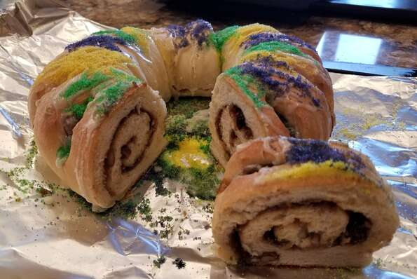

The Mardi Gras King Cake A Cake You've Probably Never Heard Of!

A New Orleans Cake That Is Delicious Beyond Belief!
Ingredients:
- 1 cup milk
- ¼ cup butter
- 2 (.25 ounce) packages active dry yeast
- ⅔ cup warm water (110 degrees F/45 degrees C)
- ½ cup white sugar
- 2 eggs
- 1½ teaspoons salt
- ½ teaspoon freshly grated nutmeg
- 5½ cups all-purpose flour
- FILLING:
- 1 cup packed brown sugar
- 1 tablespoon ground cinnamon
- ⅔ cup chopped pecans
- ½ cup all-purpose flour
- ½ cup raisins
- ½ cup melted butter
- FROSTING:
- 1 cup confectioners' sugar
- 1 tablespoon water
Steps:
-
Scald milk, remove from heat and stir in 1/4 cup of butter. Allow mixture to cool to room temperature. In a large bowl,
dissolve yeast in the warm water with 1 tablespoon of the white sugar. Let stand until creamy, about 10 minutes.
-
When yeast mixture is bubbling, add the cooled milk mixture. Whisk in the eggs. Stir in the remaining white sugar,
salt and nutmeg. Beat the flour into the milk/egg mixture 1 cup at a time. When the dough has pulled together,
turn it out onto a lightly floured surface and knead until smooth and elastic, about 8 to 10 minutes.
-
When yeast mixture is bubbling, add the cooled milk mixture. Whisk in the eggs. Stir in the remaining white sugar,
salt and nutmeg. Beat the flour into the milk/egg mixture 1 cup at a time. When the dough has pulled together, turn
it out onto a lightly floured surface and knead until smooth and elastic, about 8 to 10 minutes.
-
Lightly oil a large bowl, place the dough in the bowl and turn to coat with oil. Cover with a damp cloth or plastic wrap
and let rise in a warm place until doubled in volume, about 2 hours. When risen, punch down and divide dough in half.
-
Preheat oven to 375 degrees F (190 degrees C). Grease 2 cookie sheets or line with parchment paper.
-
To Make Filling: Combine the brown sugar, ground cinnamon, chopped pecans, 1/2 cup flour and 1/2 cup raisins. Pour 1/2
cup melted butter over the cinnamon mixture and mix until crumbly.
-
Roll dough halves out into large rectangles (approximately 10x16 inches or so). Sprinkle the filling evenly over the dough
and roll up each half tightly like a jelly roll, beginning at the wide side. Bring the ends of each roll together to form
2 oval shaped rings. Place each ring on a prepared cookie sheet. With scissors make cuts 1/3 of the way through the rings
at 1 inch intervals. Let rise in a warm spot until doubled in size, about 45 minutes.
-
Bake in preheated oven for 30 minutes. Push the doll into the bottom of the cake. Frost while warm with the confectioners'
sugar blended with 1 to 2 tablespoons of water.